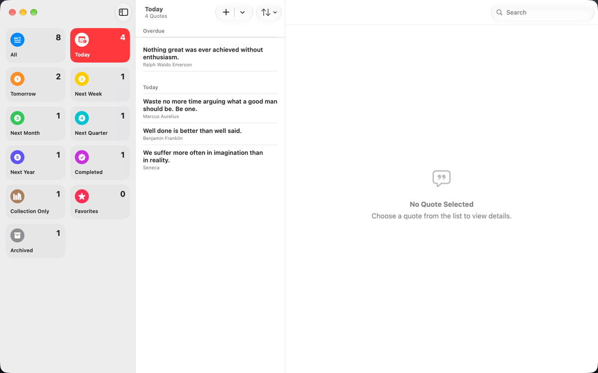
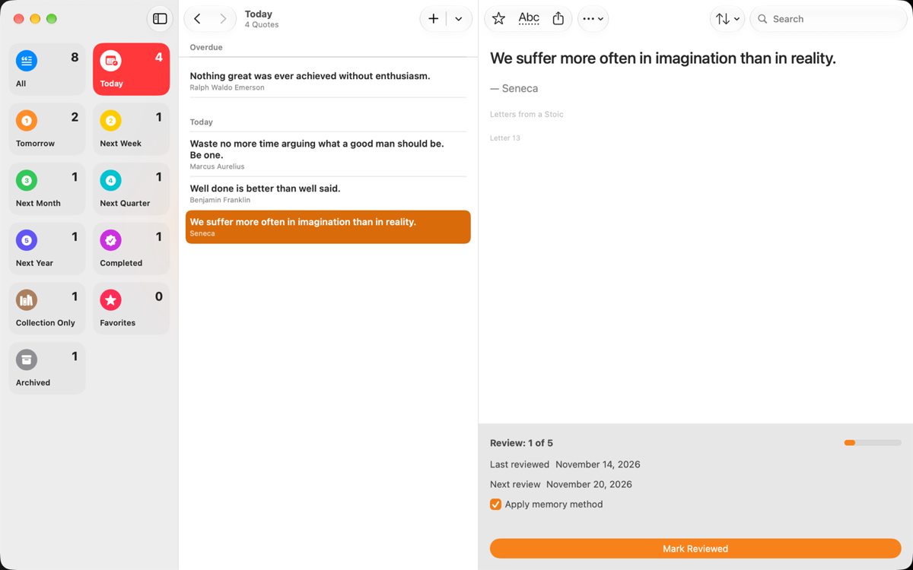
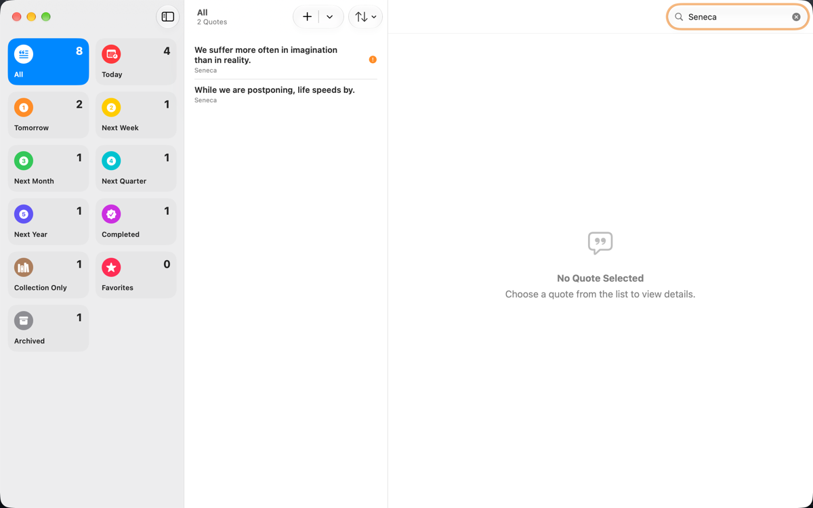
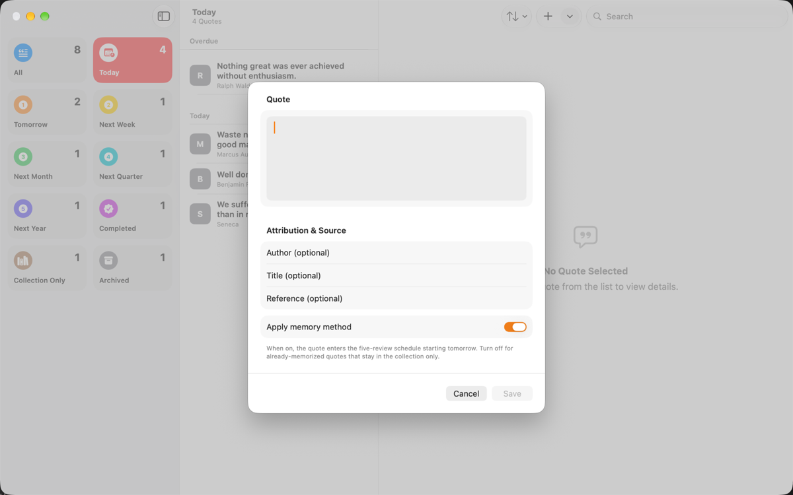
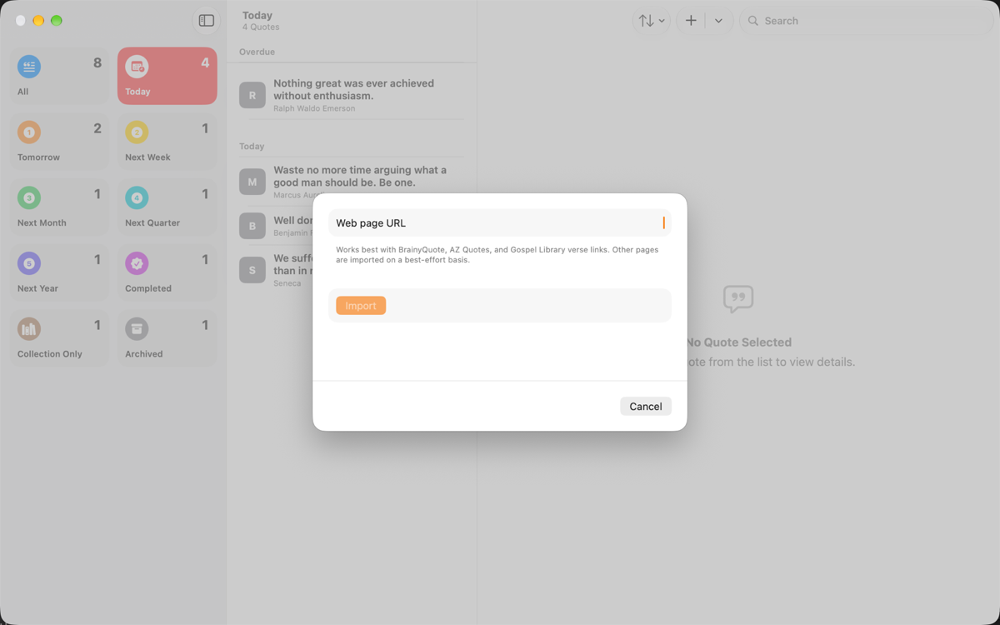
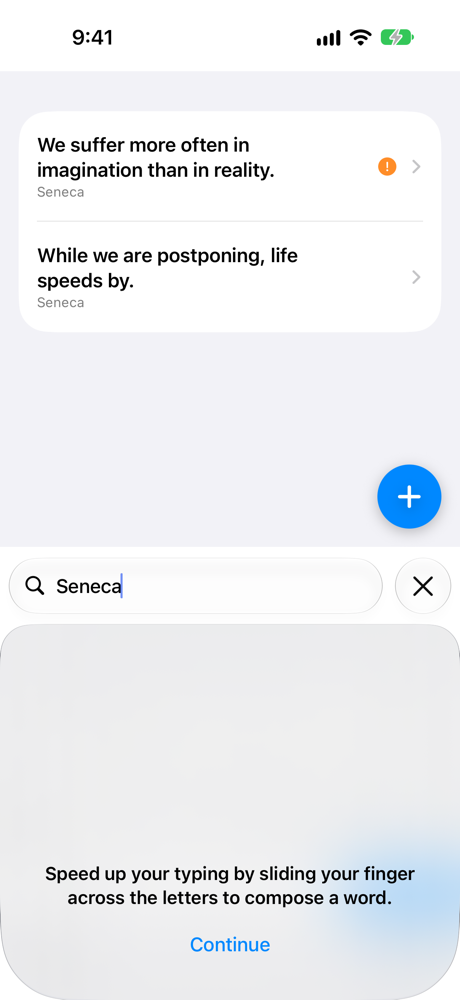
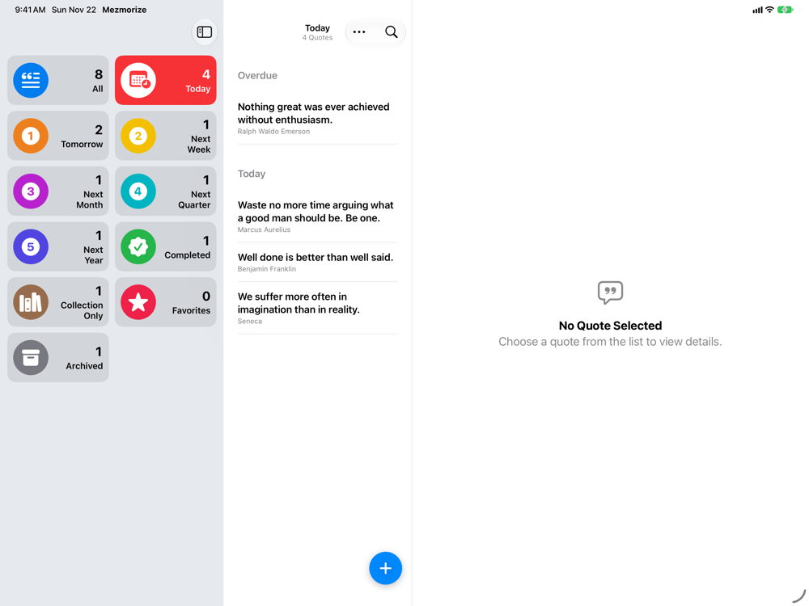
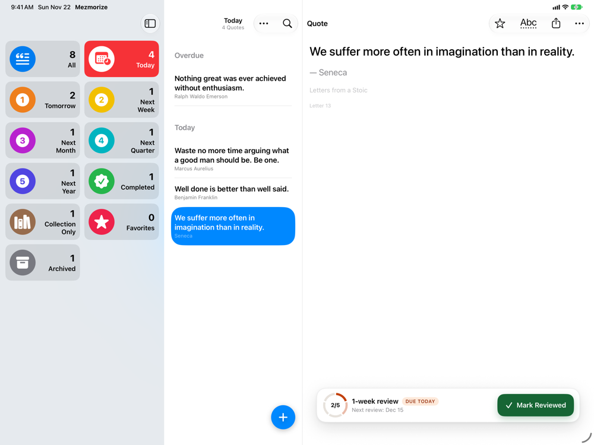
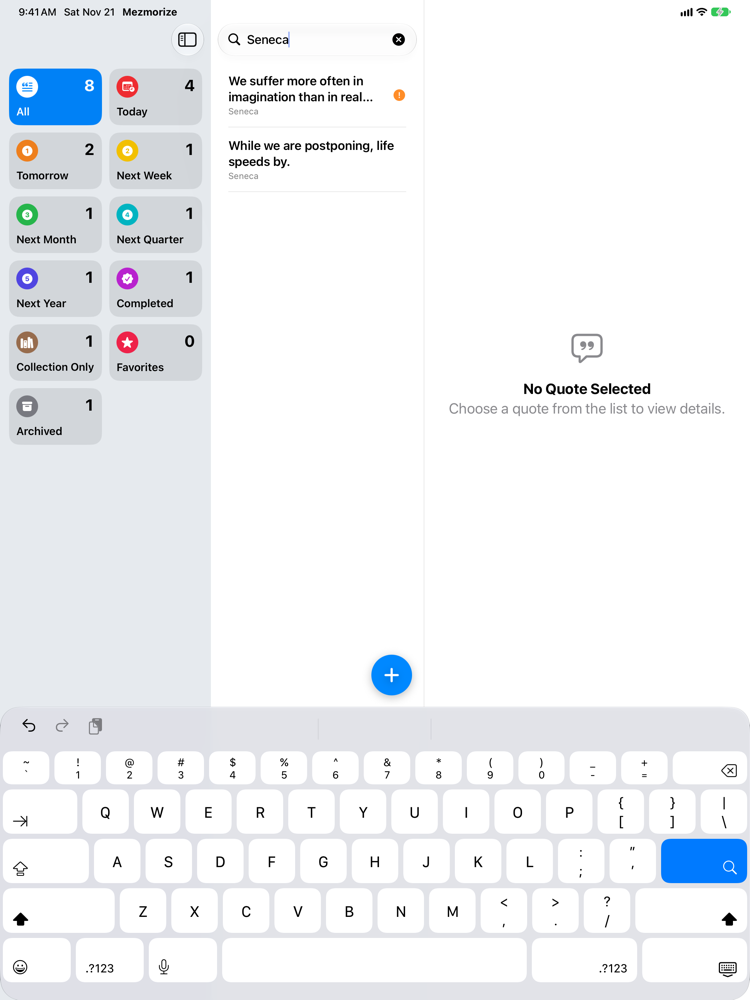

Mezmorize
A native app for macOS, iOS, and iPadOS that helps you remember quotable quotes using the Three-minute Memory Method.

The method
The Three-minute Memory Method is a short, spaced-review technique: review something five times over a year, and the total time is said to be only about three minutes. Mezmorize applies it to your personal collection of quotes.
Each quote has text and an author (source is optional). Leave Applies Memory Method on and the quote is reviewed five times:
- Tomorrow
- Next week
- Next month
- Next quarter
- Next year
Turn the toggle off for quotes you already know. They stay in your collection but never appear in Today’s Review.
Features
- Today’s Review: due and overdue quotes appear automatically.
- Mark Reviewed: read the quote, tap once, and the next review is scheduled.
- Reveal: show the quote in full, as first letters only, or hidden, as a self-test. Display only.
- Previous and next: step through the quotes in a list with the ‹ › buttons or ⌘[ and ⌘] on a Mac, or swipe left and right on iPhone and iPad.
- Search and sort: find quotes by text or author and order the list your way.
- Archive: remove a quote from your list without losing its progress.
- Favorites: tap the star in a quote’s detail, on Mac, iPhone, iPad, and Apple Watch, to mark it a favorite. Starred quotes appear in the Favorites tile, with a count. Favoriting is only a label: it never changes a quote’s review stage or dates. Favorites are not included in exported .mezmorize files.
- Share Quote: send a quote as plain text through the system share sheet.
- Import Quote from URL: fill the new quote form from a web page, then review and save.
- Daily reminders: an optional notification at a time you choose, only on days with quotes due. It shows how many are due and, if you like, a quote preview. The app icon badge shows the due count, and tapping a reminder opens Today’s Review.
Screenshots
Mac





iPhone



iPad



Learn more
Need help? See Support. Curious about data? Read the Privacy page. Want to try the beta? See TestFlight.